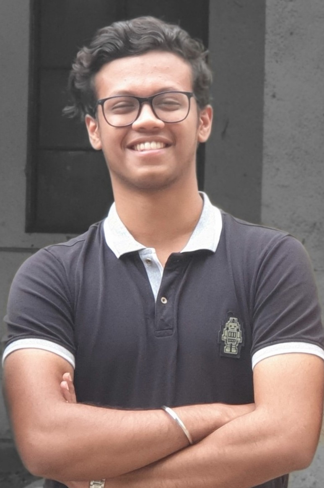
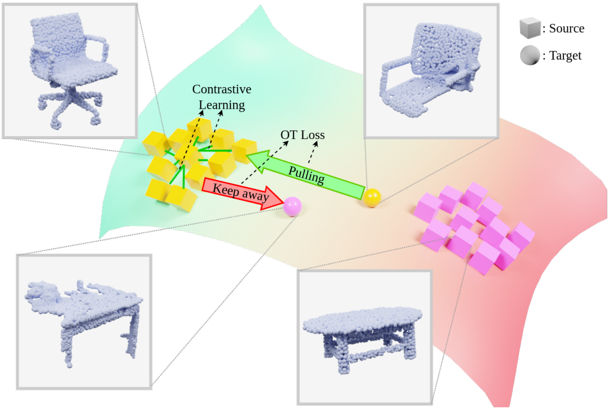
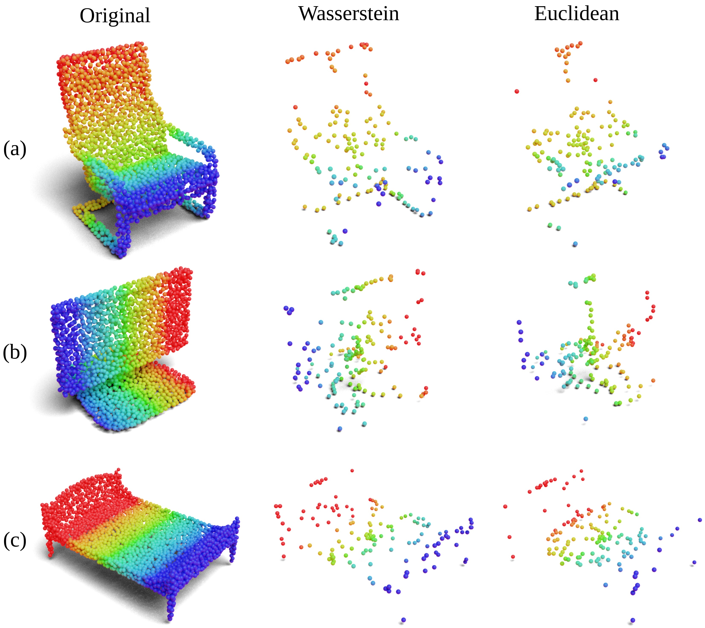
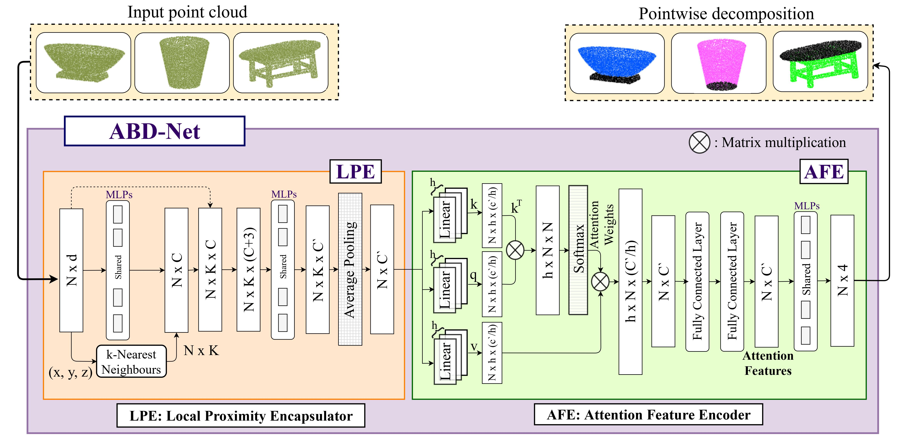
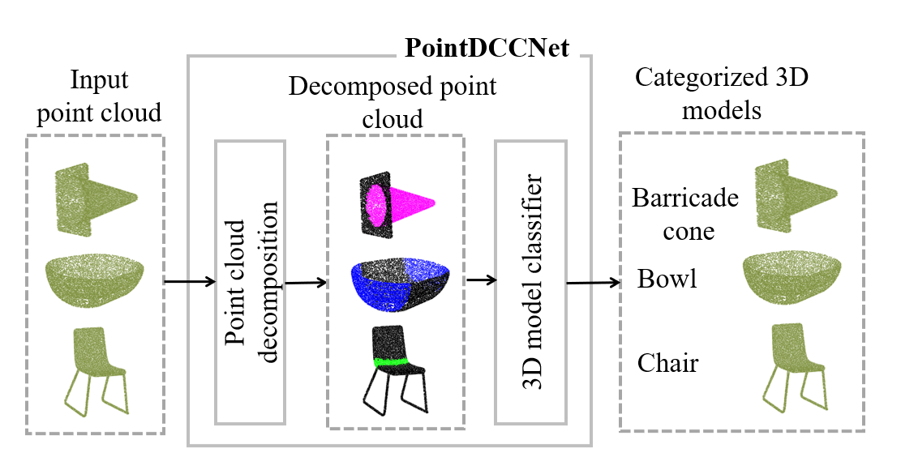

I am a third-year Master's by Research student at IIIT Hyderabad, India associated with Machine Learning Lab (MLL). I am working under the guidance of Charu Sharma. My research interests lie in the areas of 3D Computer Vision and Representation Learning. Particularly, I am interested in building systems that comprehend human motion and interactions in 3D environments. I am also being advised by Kai Han on developing such systems.
I completed my Bachelor's in Computer Science from KLE Technological University, and while I was there, I carried out my research work under the guidance of Uma Mudenagudi.
In my free time, I enjoy going for a hike, watching e-sports (Valorant), or eating!
Research
-

Synergizing Contrastive Learning and Optimal Transport for 3D Point Cloud Domain Adaptation Siddharth Katageri*, Arkadipta De*, Chaitanya Devaguptapu*, VSSV Prasad, Charu Sharma, Manohar Kaul
arXiv Project Page Video Code
WACV 2024 (Oral) - 
- 
- 